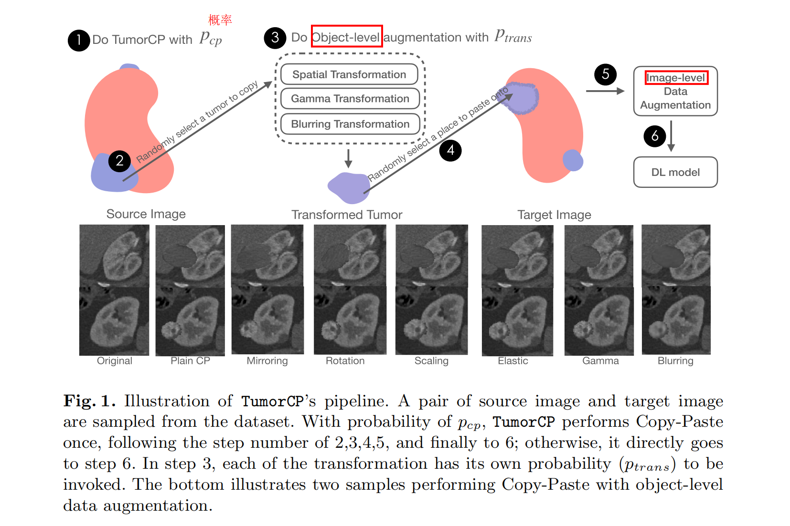

论文简介
论文名称：TumorCP: A Simple but Effective Object-Level Data Augmentation for Tumor Segmentation
- arXiv：https://arxiv.org/pdf/2107.09843.pdf
- 单位：（美国）加利福尼亚大学、中科院计算所
- 会议：MICCAI 2021
- source code：https://github.com/YaoZhang93/TumorCP
Motivation：Simple Copy-Paste is a Strong Data Augmentation Method for Instance Segmentation(CVPR 2021) https://arxiv.org/abs/2012.07177，针对自然图像
Abstract
启发自最近提出的 “Copy-Paste” 数据增强方法，本篇论文提出 TumorCP：一种简单而有效的 object-level 数据增强方法，适用于肿瘤分割。
TumorCP 在肿瘤分割任务上， Dice 以 7.12% 的显著幅度超过了 baseline。TumorCP + image-level 增强方法，比目前的 SOTA 方法 Dice 提升了 2.32%。
1 Introduction
高质量的带注释的数据集需要大量的工作和领域知识，这在医学领域尤为显著。为了提高数据高效学习，从不同的角度提出了几种成功的方法：
- leveraging unlabeled data for semi-supervised self-training
- self-supervised pre-training
- distilling priors from data
- 通过不同形态的解剖成像生成新的数据
- 利用适当的数据增强方法增加数据多样性
不同于复杂的 GAN，“Copy-Paste” 是一种简洁的增强方法，其在自然图像的实例分割中取得了新的突破（CVPR 2021）。但在医学图像领域中，这种方法在很大程度上是未被探索的，因为 “Copy-Paste” 中往往忽略上下文信息，这在直觉上是不可取的！
“Copy-Paste” 增强方法通过简单地将标注实例粘贴到新的背景图像上作为额外的训练数据，从而避免了从表示空间到像素空间的昂贵生成过程。
Copy-Paste augmentation avoids costly generation processes from representation space to pixel space by simply pasting the labeled instance onto new background images as additional training data.
此外，由于在 “Copy-Paste” 中上下文信息往往被忽略，因此它对医疗任务的有效性仍有待观察。例如，在肿瘤分割中，周围视觉线索，即上下文环境（Context），对肿瘤出现的重要性；医学图像固有的解剖结构使得肿瘤分割离不开上下文。
本篇论文旨在通过检验 “Copy-Paste” 增强技术在肿瘤分割中的有效性，来填补对上下文在医学领域中作用的理解的空白。
TumorCP 从源图像中随机选取一个肿瘤，经过一系列空间增强、对比度增强、模糊增强后，将其粘贴到目标图像中的器官上。
TumorCP randomly chooses a tumor from a source image and paste it onto the organs in the target image after a series of spatial, contrast, and blurring augmentations.
使用肾肿瘤分割数据集（KiTS19 dataset），nnUNet 来评估此方法。
2 Method

TumorCP 是一种用于肿瘤分割的在线随机增强过程，它的实现是简单和直接的。
给定一组训练样本 $\mathcal{D}$，TumorCP 有 $(1 - p_{cp})$ 的概率不执行任何操作；有 $p_{cp}$ 的概率从 $\mathcal{D}$ 中采样出一个对图像 $(x_{src}, x_{tgt}) \sim \mathcal{D}$，并执行一次 “Copy-Paste”。
令 $\mathcal{O}{src}$ 为图像 $x{src}$ 上肿瘤集合，$\mathcal{V}{tgt}$ 为 $x{tgt}$ 上的器官的体积坐标集合，$\mathcal{T}$ 是一组随机数据转换，每个转换都有一个称为 $p_{trans}$ 的概率参数。
一次 “Copy-Paste” 流程：
- TumorCP 首先采样一个肿瘤 $o \sim \mathcal{O}{src}$、一组数据转换 $\tau \sim \mathcal{T}$ 和一个目标位置 $v \sim \mathcal{V}{tgt}$；
- 然后将 $τ(o)$ 以 $v$ 为中心，取代原始数据和标注。
为了充分利用 TumorCP 的优势，精心设计了两种肿瘤 “Copy-Paste” 模式：
- intra-patient Copy-Paste
- inter-patient Copy-Paste
2.1 TumorCP’s augumentation
Intra-/Inter- Copy-Paste
为了研究病人之间的差异对 TumorCP 的影响，使用两种设置：
（1）intra-CP：源图像和目标图像来自同一病人；
（2）inter-CP：源图像和目标图像来自不同的病人。
从数据分布的角度来看，由于其强度与数据整体一致，所以首选 intra-CP，但这限制了数据的多样性。从数据多样性的角度来看，inter-CP 更受青睐，因为它打开了利用其他患者的新背景和前景的途径，但它也带来了分布差异。（实验表明 inter-CP 要优于 intra-CP）
使用三个不同的 object-level 转换来对 “Copy-Paste” 进行扩展。
- Spatial transformation decouples context and improves morphology diversity.
空间转换解耦了上下文，改善了形态的多样性。image-level 的一些增强方法（镜像、旋转）仍然作为一个整体处理图像，保持前景和背景之间的耦合。因此，模型可能会寻找并倾向于过度拟合周围看似合理但实际上不相干的线索。Figure 1 是应用缩放、旋转和镜像的刚性变换和使肿瘤变形的弹性变换来增加形态的多样性。
- Gamma transformation enhances contrast and improves intensity diversity.
伽马变换增强了对比度，提高了强度的多样性。随机采样的伽玛参数增强了肿瘤的强度多样性；幂律非线性增强局部对比度，有利于肿瘤鉴别。
- Blurring transformation improves texture diversity
模糊化改造提高了纹理多样性。使用高斯滤波器作为模糊变换，聚集噪声干扰的低层次纹理可以间接增加相对高层次纹理的纹理多样性。
整个 Pipeline 可以结合 image-level 增强方法。
2.2 Intuitions on TumorCP’s Effectiveness
TumorCP 有两个目标：i) 增加数据多样性，ii) 学习高层次和抽象肿瘤的不变表示。数据多样性随着肿瘤的新组合和周围环境的增加而增加。为了了解高层次的信息，如下讨论了 TumorCP 的三个特性来解释其有效性。
- 通过语境不变的预测消除背景偏差（Eliminated Background Bias by Context-Invariant Prediction）
CNN 不可避免地将周围的视觉上下文与物体本身进行卷积，可能会使得模型偏向于看似合理但实际上与肿瘤无关的线索，从而增加过度拟合的风险。
TumorCP 则为肿瘤提供了一个更为独立的区域，从而为肿瘤周围上下文环境提供了无限的可能性。提升了模型的泛化能力、消除了背景偏差。
- 通过转换-不变预测提高泛化能力（Improved Generalizability by Transformation-Invariant Prediction）
该模型应同时捕获高级语义信息和低级边界信息，以实现成功的分割。TumorCP 可以生成不同大小、形状、颜色和纹理的肿瘤，增加了类内差异。
它能够帮助模型从数据中捕获更好的语义信息。换句话说，它使模型的预测在不同的数据转换（可能类似于真实世界的数据）中保持不变，并提高了通用性。
- Oversampling Behavior
数据不平衡是一个普遍存在的问题，典型的解决方案通常是根据类分布重新加权损失函数或重新采样训练数据。在肾脏肿瘤分割任务中，背景、器官、肿瘤极度不平衡，TumorCP 就像一个数据重采样器，以较小的成本显著增加肿瘤的增殖程度。
3 Experiments and Discussion
在 KiTS19 数据集（肾肿瘤的分割）上评估 TumorCP，使用 Sørensen-Dice系数 (Dice) 评分。
消融学习
（1）Ablation on intra-CP with different transformations.
（2）Ablation on intra-/inter-CP
（3）Ablation on compatibility
-
TumorCP（Object-level）和 Image-level 的图像增强是兼容的；
-
TumorCP 也改善了器官分割；
极低数据量的实验
4 Conclusion
- 提出了 TumorCP： a simple but effective object-level data augmentation for tumor segmentation；
- 在肾脏肿瘤分割任务上，比目前的 SOTA 提升了 2.31% Dice；
- 实验验证了 TumorCP 在极低数据量情况下的潜力；
- TumorCP 不直接处理 Inter-CP（不同的病人）之间的分布不匹配问题，但仍然取得了惊人的性能提升。